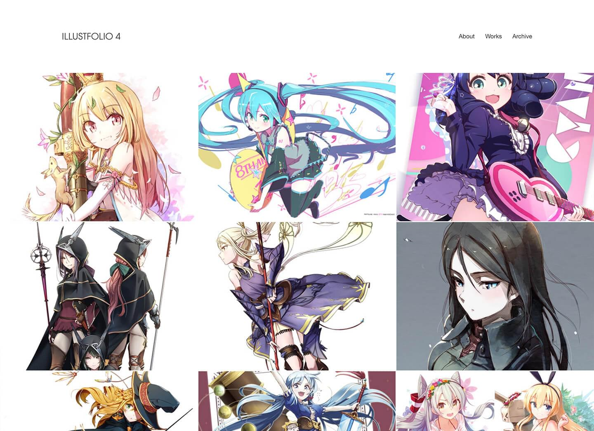

デモページイラスト提供: pemuさん
レイアウトをカスタマイズ
「大きなサムネイルで見せたい」「恥ずかしいので小さくていい」どちらの希望も叶えます。
サムネイルの大きさ、余白の空きをカスタマイズして、あなたの理想のレイアウトを見つけましょう。
レイアウトを試そう
- XS
- S
- M
- L
- XL
- SINGLE
- 
-

ILLUSTFOLIO 4: イラストポートフォリオサイトが一瞬でつくれるTUMBLRテーマ
イラストレーターのためにデザインされた「Illustfolio 4」で、イラストサイトを作ろう。
すぐに作れる簡単さと、さまざまなカスタマイズに対応する柔軟さが特長です。
デモページイラスト提供: pemuさん
「大きなサムネイルで見せたい」「恥ずかしいので小さくていい」どちらの希望も叶えます。
サムネイルの大きさ、余白の空きをカスタマイズして、あなたの理想のレイアウトを見つけましょう。
クリーンなデザインに一新。あなたのイラストをすっきりと表示します。
ページ下部に自己紹介を入力できるプロフィール欄を設けています。
ページ下部にタグ一覧を表示できます。イラストをタグごとに見たい場合に便利です。

全世界にユーザーをもつTumblrのプラットフォームを活用するので、Illustfolio 4を使えばあなたの作品が自動的に世界のサブカルチャーファンに発信されます。LikeやReblog（リアクション）をもらえるチャンスも、それだけ高いということです。
また、気楽にひっそり続けたいときには、検索から非表示にしたり、サイト全体にパスワードをかけたりすることもできます。
イラストレーターに寄り添い続けて足掛け8年。進化を重ねたIllustfolio 4で、あなたの作品をまとめてみませんか。
さまざまなクリエイター・イラストレーターが Illustfolio 4 を活用しています。
ポートフォリオづくりの参考にしてみてください。
※本テーマを元に改変しているサイトも含みます。
ポートフォリオとは、自分の作品をまとめた作品集のことです。クリエイターにとって名刺代わりの役割を持ちます。
自分の作品を1つのサイトにまとめることで、あなたのこれまでの創作活動のあゆみを簡単に振り返ることができます。
また、自分のスキルや経歴を効果的にアピールできるので、仕事に繋げたいクリエイターにもおすすめです。
イラストレーターに寄り添い続けて足掛け8年。進化を重ねたIllustfolio 4で、あなたの作品をまとめてみませんか。
私の所属する同人サークル『konel』で、「ポートフォリオサイトをつくる」をテーマにした同人誌を作りました。
（Illustfolio 4 の開発裏話も載ってます）